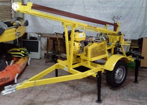
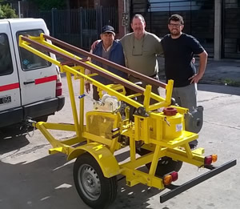
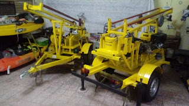

Pampa III v16



Este equipo en su versión III v16, viene con embrague a diafragma a palanca.
La mayor dificultad de suelo, la tosca mora.
Alcanza una profundidad (según las características de suelo) de 70 metros, 6”/7”.
Característica que comparte con su hermana la 3EN1 v12.
Equipo mediano pesado, con una parada de metro y medio cuadrado, lo que lo hace muy firme.
Motor 13 hp AM, bomba de lodos 50AT, vaina con morsa, malacate manual para 800 kg, linga, grillete, roldana con rulemán, torre para barras de 1500 mm, sistema de agua y mangueras (sin válvula de retención), junta de agua giratoria, soporte universal, embrague simple a polea, 4 patas regulables, enganche y cadena de seguridad, luces reglamentarias.
Contacto: zaccariehijos@gmail.com
WhatsApp: +54 9 11 1234-5678
© 2025 Zaccari e Hijos - Todos los derechos reservados